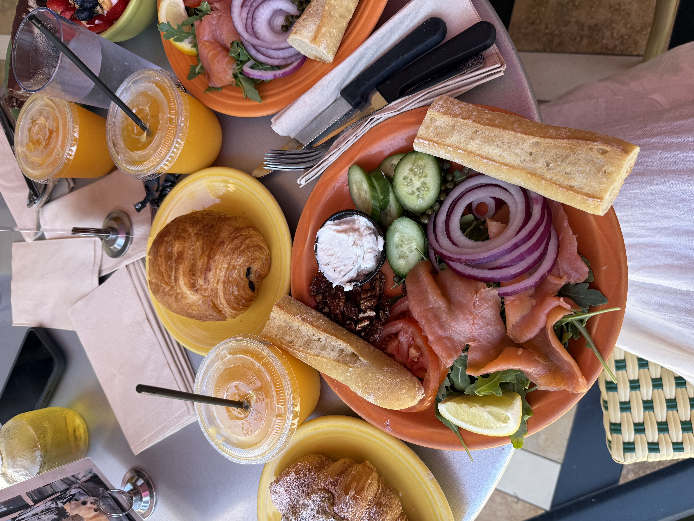

Contact
My journey.
Three chapters that have shaped the way I think, learn, and work.
The Foundation
I studied Mathematical and Computer Modeling at SDU University, where I developed my foundation in quantitative thinking, technology, programming, and problem-solving.
Putting Ideas into Practice
Working in project management across the Automation Department and TechnoPark gave me the opportunity to work with teams, support technology-driven projects, and see how ideas develop into real outcomes.
A New Chapter
At Boston University, I'm pursuing my master's degree in Applied Business Analytics, bringing together my technical background with business strategy, statistical modeling, and data-driven decision-making.
How I think & work.
Beyond tools and technical skills, these are the principles I try to bring into every project.
Think analytically.
Understand the problem before choosing the tools. Ask questions, explore the evidence, and look for what really matters.
Connect the dots.
Bring together technical insights, people, and business goals. I believe the most useful solutions often come from connecting different perspectives.
Make it useful.
Turn findings into something people can actually act on. Good analysis should help make decisions clearer and outcomes better.
Beyond the numbers.
There's more to life than datasets, deadlines, and project plans. I enjoy discovering new places, collecting memories, and finding inspiration in everyday experiences.


Still learning.
Still exploring.
I'm interested in opportunities where analytical thinking, technology, and business meet. As I continue developing my skills, I'm looking forward to applying what I've learned to real problems, collaborating with different teams, and discovering where I can make the greatest contribution.
Let's connect ↗Selected Projects
A collection of my recent work in data analytics, machine learning, and large-scale data processing. Each project reflects my approach to turning complex datasets into meaningful insights and practical solutions.
01 / DATA ANALYTICS
US Job Market & Salary Analytics
Exploring compensation patterns across industries and occupations
Analyzed a large-scale dataset of US job postings using PySpark and AWS EC2, focusing on salary distributions, employment types, industry classifications, and occupational trends.
What I worked on
- Cleaned and transformed large datasets using PySpark.
- Analyzed salary differences across NAICS industries.
- Calculated median salaries by ONET occupation.
- Developed interactive visualizations using Plotly.
- Investigated salary normalization and data quality issues.
Tools: Python · PySpark · AWS EC2 · Plotly · SQL
02 / MACHINE LEARNING
Predictive Modeling: Student Yield Classification
Comparing Decision Trees and Random Forests
Developed classification models to predict high and low enrollment yield using institutional characteristics. Compared model performance to understand predictive accuracy, generalization, and overfitting.
What I worked on
- Prepared and split data into training and validation sets.
- Converted enrollment yield into binary classes.
- Trained Decision Tree and Random Forest classifiers.
- Evaluated precision, recall, F1-score, and accuracy.
- Interpreted decision trees and confusion matrices.
Results
- Decision Tree validation accuracy: 66.88%
- Random Forest validation accuracy: 72.67%
Tools: Python · Pandas · Scikit-learn · Matplotlib
03 / BIG DATA & SQL
Large-Scale US Job Market Analysis
Processing over 815,000 job postings with Apache Spark
Built an analytical workflow using a large US job postings dataset stored in Parquet format. Explored hiring activity, salaries, employers, remote opportunities, and regional labor-market trends.
What I worked on
- Processed 815,193 records across 20 Parquet files.
- Worked with structured datasets using Spark DataFrames.
- Applied Spark SQL for analytical queries.
- Analyzed compensation by occupation and metropolitan area.
- Explored remote hiring patterns and employer demand.
- Created data visualizations to communicate findings.
Tools: Apache Spark · PySpark · Spark SQL · Python · AWS
Let’s talk
I’m always open to conversations about internships, analytics projects, collaboration, and opportunities where business, technology, and data come together. Whether you’d like to connect professionally or simply reach out, I’d love to hear from you.